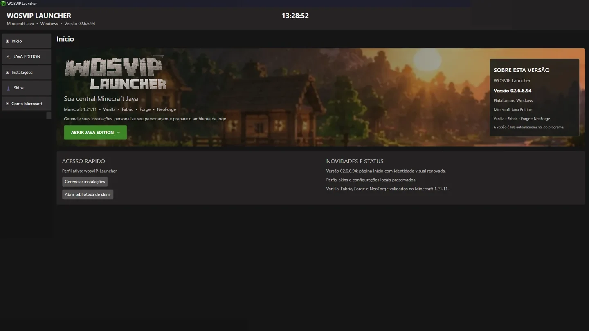
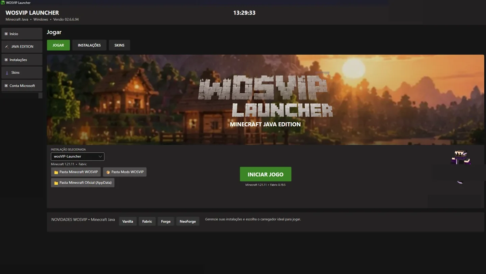
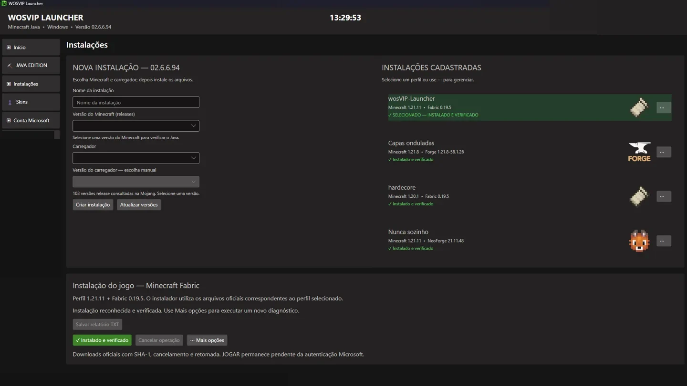
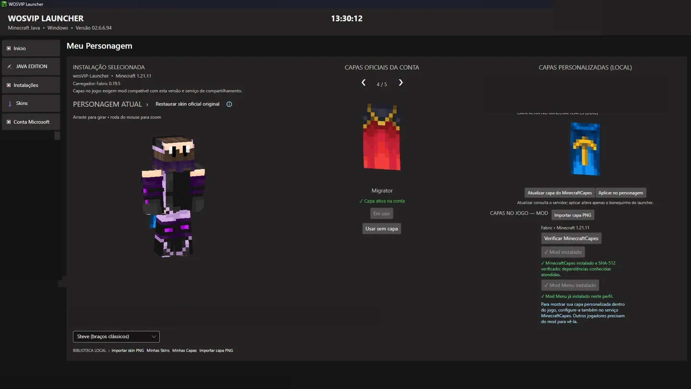
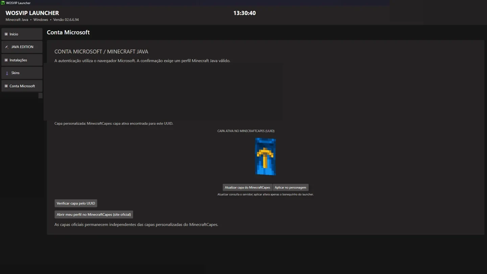
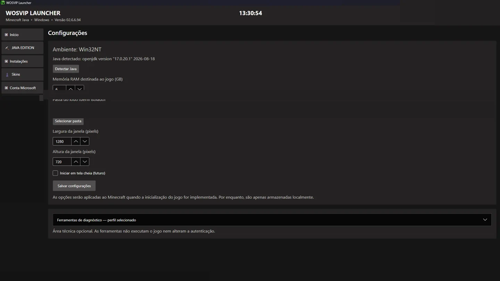

Instalações e perfis
Crie e gerencie instalações de Minecraft Java com Vanilla, Fabric, Forge e NeoForge.
Gerencie instalações, escolha seu carregador, personalize skins e capas e entre no Minecraft Java por uma interface organizada e independente.

Recursos demonstrados na versão testada em Windows 11.
Crie e gerencie instalações de Minecraft Java com Vanilla, Fabric, Forge e NeoForge.
Autenticação e restauração de sessão com conta Minecraft Java válida.
Personagem 3D, capas oficiais e integração com MinecraftCapes.
Detecção de Java, configurações de RAM e ferramentas de verificação.
Acesso rápido às pastas do Minecraft, perfis e mods.
Launcher minimizado ao abrir o jogo e restaurado após seu encerramento, nos testes locais.
Imagens da versão 02.6.6.94, com dados pessoais ocultados para publicação.





02.6.6.94 — testada localmente no Windows 11 com Minecraft Java 1.21.11.
Verificação de versões pelo GitHub Releases, com aviso e instalação somente se o usuário autorizar. Ainda não implementada.
O instalador será disponibilizado em Releases quando a distribuição pública estiver preparada. Não há promessa de download ativo nesta página.